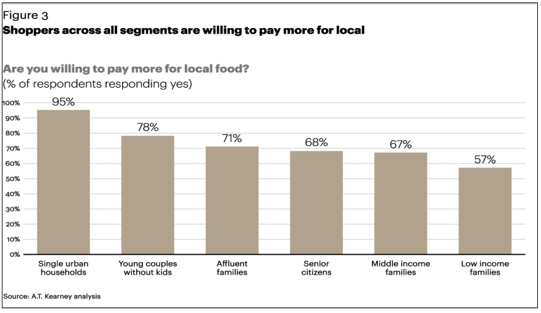
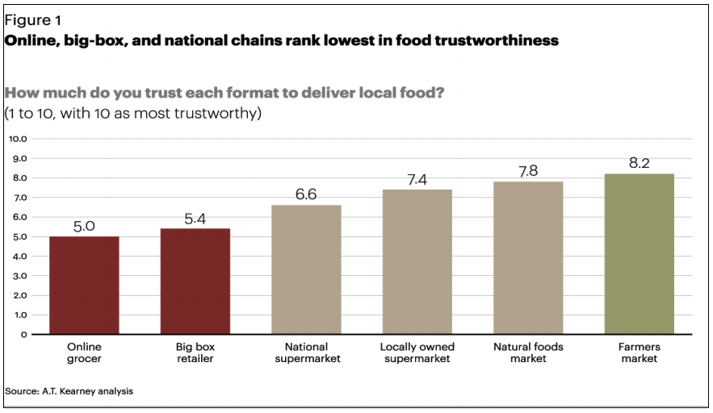

There has been an increase in the drive for more local food. Consumers are increasingly losing trust in national chains to provide fresh, local food. Through studies done through the Agricultural Marketing Service (a department a part of the USDA), as well as a survey we conducted, people are relying more on farmer markets to satisify their need for fresh, local food, and having a mobile app will encourage users to go to farmer markets more.
In our survey, we asked if a mobile app would encourage users to go to farmer markets more, and out of our responses, 92.7% said yes (Farmers Market Team, “Farmers Market Survey”).
In our survey, we asked which platform would be the best solution, and 80.5% thought that a mobile app would be better than web app (Farmers Market Team, “Farmers Market Survey”).
Consumers are willing to pay more for fresh, local produce (Tropp, “Why Local Food Matters”).

Consumers are distrusting of national chains to provide fresh, local produce (Tropp, “Why Local Food Matters”).

The research conducted through the survey as well as the infographics show that our solution is viable. Consumers trust farmers markets the most to provide them fresh, local food. The need for local food has increased so much that consumers are willing to pay more for it. Farmers markets need a solution to provide their consumers with the best way to access this, and based off of the survey we conducted, the best platform to do this would be through a mobile app. This would not only ensure more visibility on the farmers markets, but encourage consumers to go more.
Please download the database here.